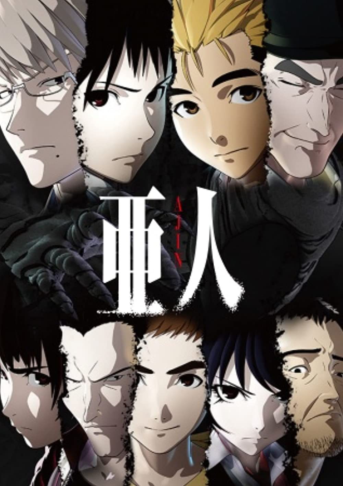

Ajin - Gamon Sakurai

Overview & Recap
Ajin is an action/dark fantasy anime based off of a manga. Mysterious immortal humans known as "Ajin" first appeared 17 years ago in Africa. Upon their discovery, they were labeled as a threat to mankind. Kei Nagai, a teenager, realises he is an Ajin and flees before the government can catch and experiment on him. Other Ajin's are planning an up-rising and he has to choose a side.
Ep i got up to and why i dropped it
I got up to around halfway through ep 3. i couldnt rlly get used to the art style and the plot and characters seemed predictable.